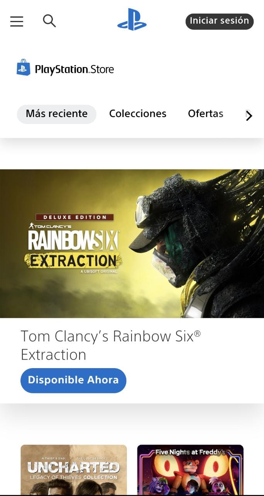
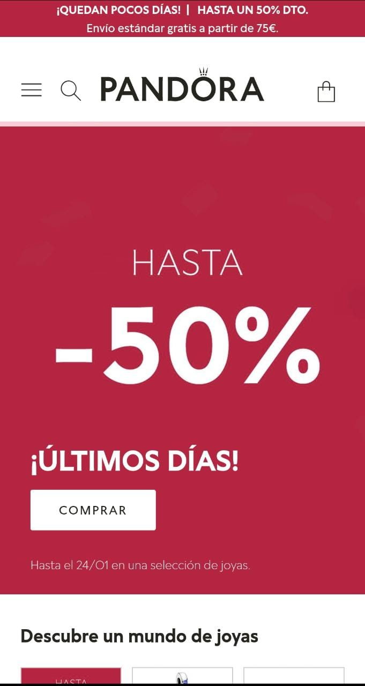

Rule of Thirds
PlayStation Store
playstation.com
In this website, Rule of Thirds help us to appreciate in three different pars each main section of the website. In the first quadrant we can only identify the menu section and the tool bar. In the second one is located the most important advertisement which cathes our attention and is different like the first or third quadrant. Finally, the last one is to know more more information about the advertisement.
White space and clean design
Sendinblue
sendinblue.comWhite space and clean design is something important in our website, it could be seen like a profession website and committed to the area of work. In this case is something important to use the least amount of colors, here is using only 3 colors, and it's interesting how the developer use the colors of the logo for text and some details.
PARC: Proximity
Pandora
pandora.com
Proximity is commonly used in webstores because is a tool to catch users with deals and big helpful information. In this case Pandora is a jewerly store and the first thing you see is an announcement with the 50% of discount, something that generates attention to continue using and browsing.